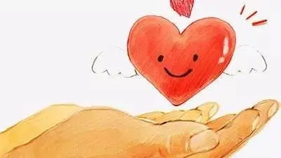

故事一——行善
中午，下课后我准备直接去学校餐厅吃饭，外面的雨依旧淅淅沥沥地下着，夹杂着一丝的寒气，“唉，这鬼天气，冻死了要……”，我心里暗暗抱怨道。四月的西安，雨水很多，一下起来便没完没了。
我拎起书包拿着伞就出了教学楼，人群中一个女生吸引了我的注意力。她没带伞，似乎也不打算同周围的人共一下伞，只是戴起卫衣的帽子，在雨中走着，怀中似乎还抱着几本书，可能是怕打湿了自己的书，所以她把书抱得很紧。我加快了脚步，走到她的后面，悄悄地把伞举过她的头顶，想替她挡一下雨，然而她过一会儿就发现了。她转过身来，脸上惊讶的表情中又透露着感激。
“谢谢你啊同学，忘记带伞了今天”，她笑着说道。
“啊没事儿的，谁都有忘记带伞的时候嘛。”，我回答道，“同学我俩共一下伞吧？”
“嗯嗯好嘞！”，女生说着便钻到我的伞底下，我微微向她靠近，尽量使我的这把小伞能遮住我们两个人。
“对了同学，你是去学校餐厅吃饭吗？”
“嗯是呢。”
“好巧我也是，哈哈哈……”
故事二——受惠
晚上六点多，大部分学生已经用完餐了，趁着不忙，陈师傅和旁边一个卖米粉的窗口的王师傅唠起了嗑，“今天来吃肠粉的同学同学挺多的，我的肠粉基本上卖光了。”，陈师傅说道，脸上露出满足的神情。“看来你的肠粉还挺受学生欢迎呀”，王师傅应和说。“哈哈，你的米粉生意也不错……”，陈师傅回应道。
俩人聊了一会儿天后，一个女孩朝陈师傅的窗口走来。
“您好，我想要一份肠粉，谢谢。”女孩拿出饭卡，准备付钱。
“啊这？同学不好意思啊，肠粉不够一份了。”，陈师傅感觉有些尴尬。
“呃，那算了吧，谢谢您了。”，女孩儿语气中明显有点失望，正准备离开。
“等等同学，要不我把剩下的都给你做了？但可能不够一份。”，陈师傅对那位同学说，“我不收你的钱，行吗？”
“可以可以，谢谢师傅，您太好了”，女孩儿顿时愉悦起来。
“没事儿没事儿，你稍等，马上就做好了……”
这是两个真实的小故事。 我是故事一中那个对忘带伞的女孩儿施以援手的同学，也是故事二那个被食堂师傅施以援手的女孩儿。
是的，世间的温暖都是人们之间微妙的动作，都在人们的一颦一笑、举手投足之间。举手之间，你会传递温暖；伸手之间，你能帮助他人。正如古人所说的，勿以善小而不为。小与大是相对的，但善与恶却是绝对的其实，做善事的同时也在冥冥之中帮助了自己。一滴水可以折射太阳的光辉，一件好事可以看出一个人高尚纯洁的心灵，千万不要因为这件善事小而不去做。一次关灯，一句善语，一次让座，一个微笑，都是对公共利益的贡献。小小的善举，举手之劳，并不需要我们付出很多，却能换来谅解、和睦、友谊，为社会做点事，为他人做点事，为自己做点事，美好的就是生活在点点滴滴中创造，在持之以恒中延伸。
我们现实生活中不乏伸手传递温暖的事，公交车上给老弱病残让座，给陌生人指个路，在电梯上看到着急进来的人帮他开一下门……正是这些微小的事体现了一个人的价值，展现了一个人的人格魅力。所以，请不要吝啬你的爱，要知道捐款一元和捐款一亿同样高尚。